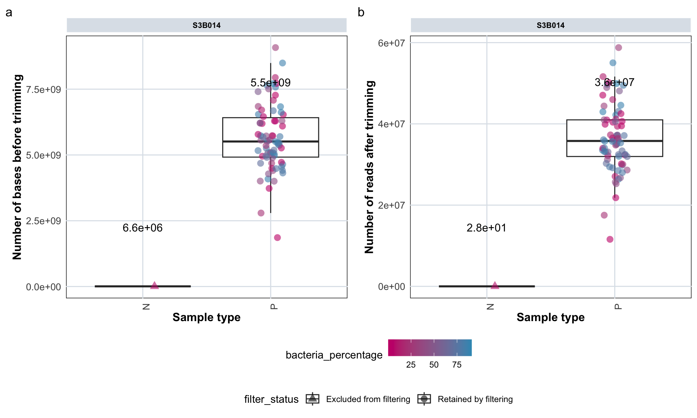
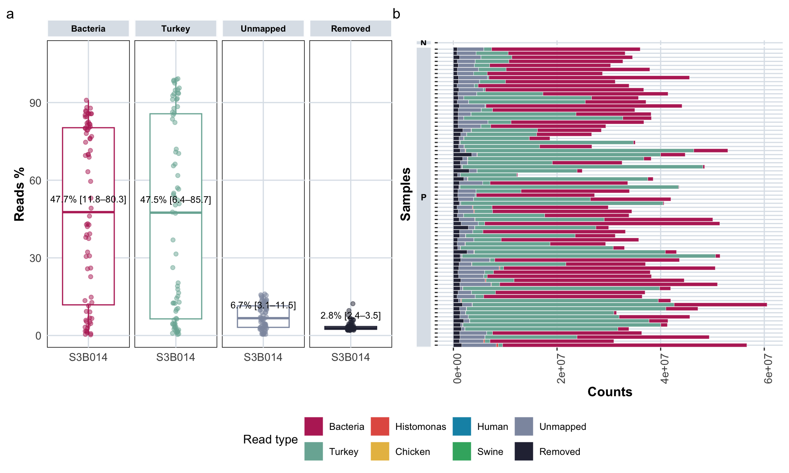
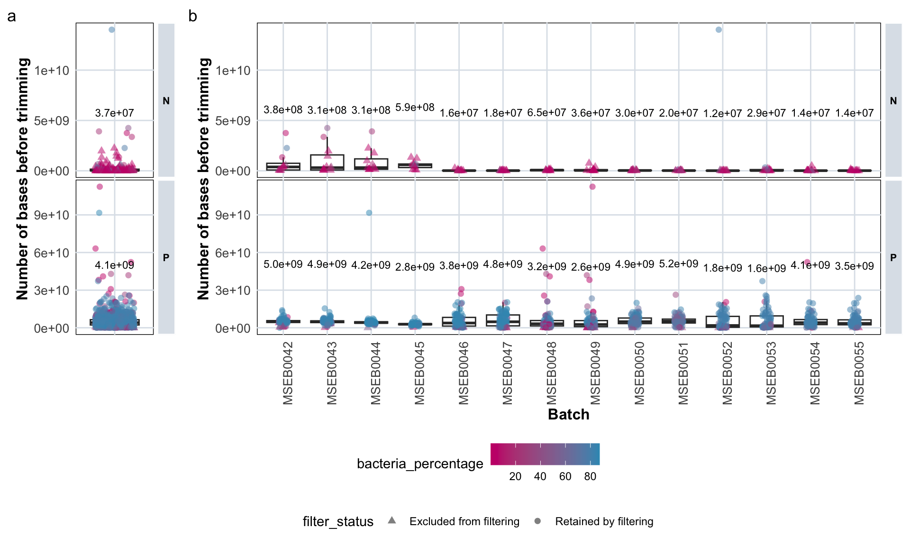
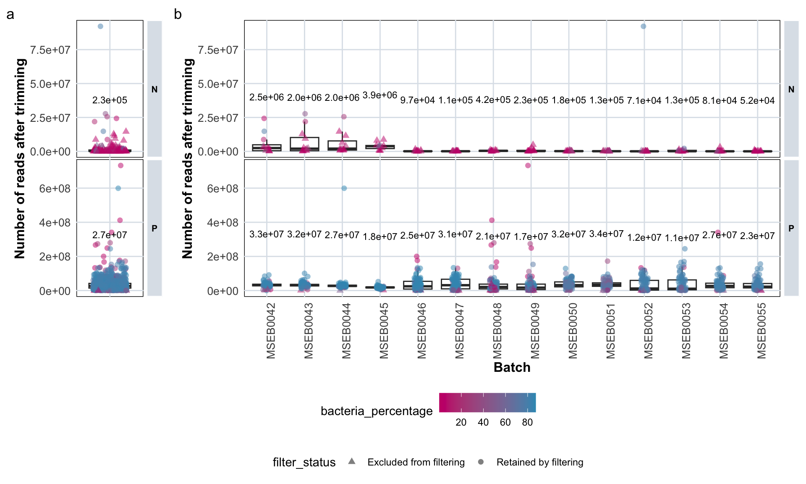
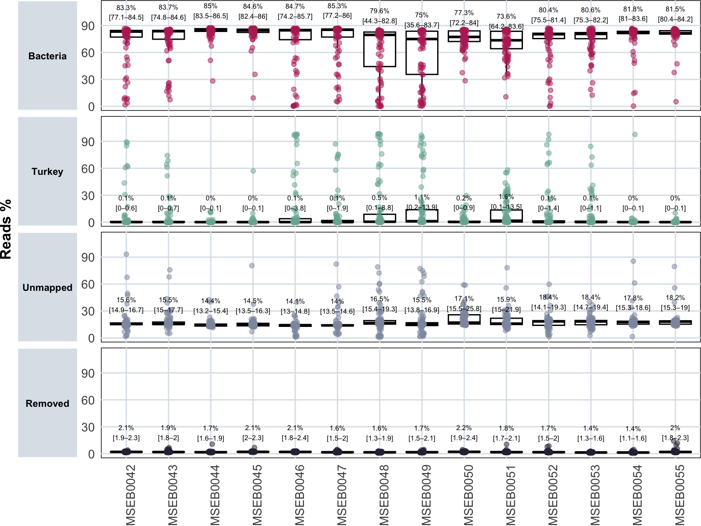
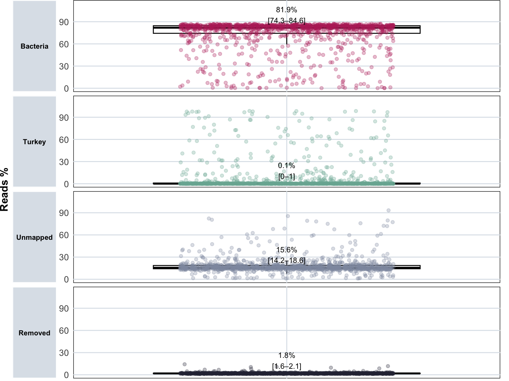
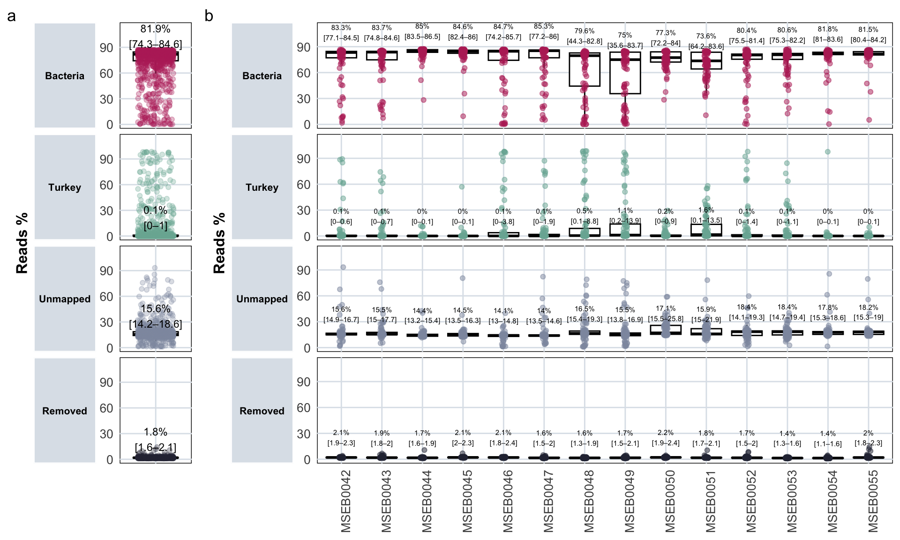
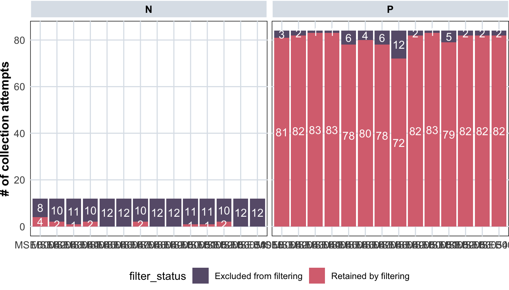
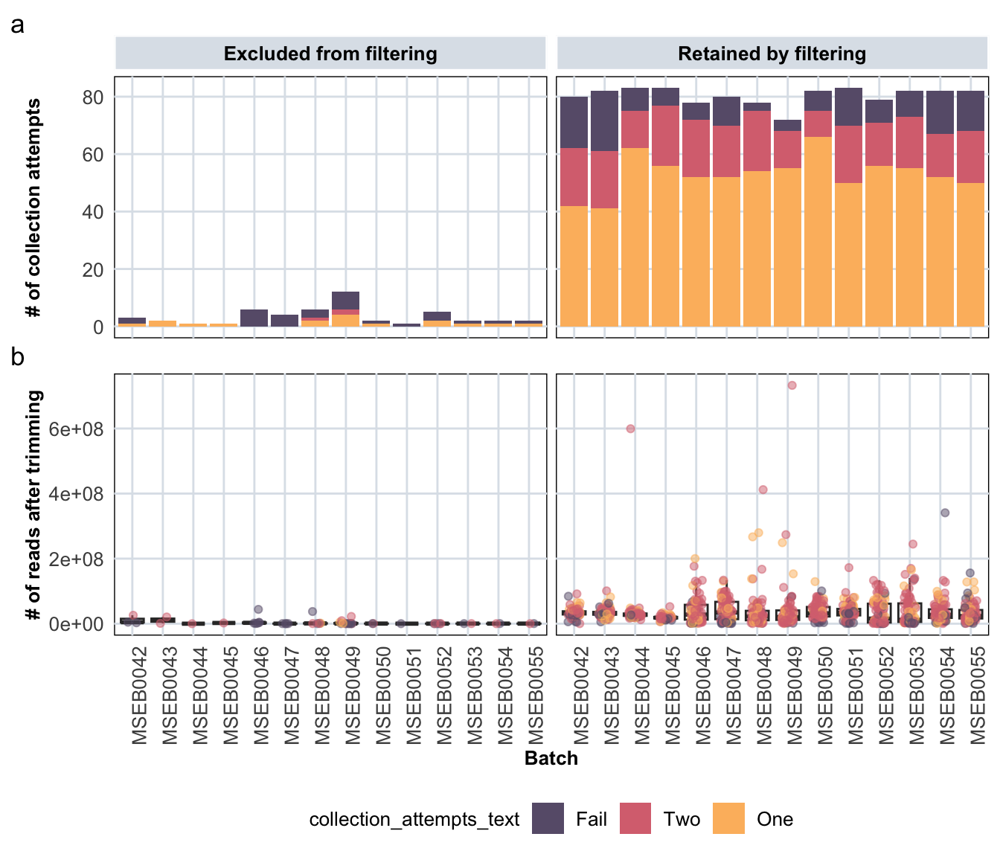
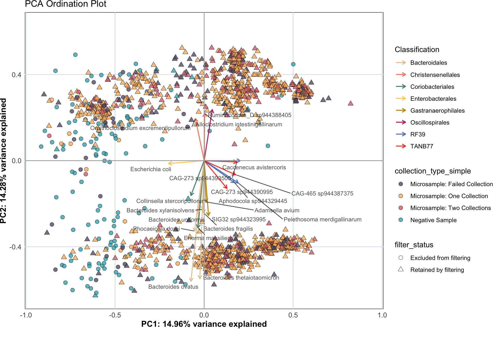

12 Sequencing Statistics
load("data/macro/sample_metadata.Rdata")
load("data/macro/counts.Rdata")
load("data/macro/seq_stats.Rdata")
load("data/micro/sample_metadata.Rdata")
load("data/micro/counts.Rdata")
load("data/micro/seq_stats.Rdata")
load("data/MAG_catalogue/data.Rdata")
load("data/data_colors.Rdata")12.1 Prepare tidy tables for plotting
Create tidy table for sequencing stats before & after trimming (micro)
tidy_plot_data_stats_before_after <- plot_data_stats %>%
pivot_longer(
cols = c(
total_sequences_before_trim, total_sequences_after_trim,
percent_gc_before_trim, percent_gc_after_trim,
total_bases_before_trim, total_bases_after_trim),
names_to = c("Metric", "Condition"), # Split column names
names_pattern = "(.*)_(before|after)_trim") %>%
pivot_wider(names_from = Metric, values_from = value) %>%
mutate(Condition = factor(Condition, levels = c("before", "after")))Create tidy table for sequencing stats before & after trimming (macro)
tidy_plot_data_stats_before_after_macro <- plot_data_stats_macro %>%
pivot_longer(
cols = c(
total_sequences_before_trim, total_sequences_after_trim,
percent_gc_before_trim, percent_gc_after_trim,
total_bases_before_trim, total_bases_after_trim),
names_to = c("Metric", "Condition"), # Split column names
names_pattern = "(.*)_(before|after)_trim") %>%
pivot_wider(names_from = Metric, values_from = value) %>%
mutate(Condition = factor(Condition, levels = c("before", "after")))Create tidy table for read counts (micro)
category_counts <- tibble::tibble(
category = c(
"bacteria_total_mapped", "turkey_total_mapped", "histomonas_total_mapped", "chicken_total_mapped",
"human_total_mapped", "swine_total_mapped", "unmapped", "removed_sequences_after_trim"),
label = c("Bacteria", "Turkey", "Histomonas", "Chicken", "Human", "Swine", "Unmapped", "Removed"),
color = c( "#B92D65", "#79b1a3", "#e35d51", "#E8BD50", "#1092b4", "#3baf6f", "#8d98ae", "#2b2d42"))
tidy_plot_data_stats_counts <- plot_data_stats %>%
pivot_longer(
cols = c(
chicken_total_mapped, human_total_mapped,
swine_total_mapped, bacteria_total_mapped, turkey_total_mapped, histomonas_total_mapped,
unmapped, removed_sequences_after_trim),
names_to = "mapping_status", values_to = "counts") %>%
left_join(category_counts, by = c("mapping_status" = "category")) %>%
# order the groups in desired order
mutate(label = factor(label,
levels = c("Bacteria", "Turkey", "Histomonas", "Chicken", "Human", "Swine", "Unmapped", "Removed")))
# set labels & colours as colour palette
color_palette_tidy_plot_data_stats_counts <- setNames(category_counts$color, category_counts$label)Create tidy table for read counts (macro)
category_counts <- tibble::tibble(
category = c(
"bacteria_total_mapped", "turkey_total_mapped", "histomonas_total_mapped","chicken_total_mapped",
"human_total_mapped", "swine_total_mapped", "unmapped", "removed_sequences_after_trim"),
label = c("Bacteria", "Turkey", "Histomonas", "Chicken", "Human", "Swine", "Unmapped", "Removed"),
color = c( "#B92D65", "#79b1a3", "#e35d51", "#E8BD50", "#1092b4", "#3baf6f", "#8d98ae", "#2b2d42"))
tidy_plot_data_stats_counts_macro <- plot_data_stats_macro %>%
pivot_longer(
cols = c(
chicken_total_mapped, human_total_mapped,
swine_total_mapped, bacteria_total_mapped, turkey_total_mapped, histomonas_total_mapped,
unmapped, removed_sequences_after_trim),
names_to = "mapping_status", values_to = "counts") %>%
left_join(category_counts, by = c("mapping_status" = "category")) %>%
# order the groups in desired order
mutate(label = factor(label,
levels = c("Bacteria", "Turkey", "Histomonas", "Chicken", "Human", "Swine", "Unmapped", "Removed")))
# set labels & colours as colour palette
color_palette_tidy_plot_data_stats_counts <- setNames(category_counts$color, category_counts$label)Create tidy table for read percentages (micro)
category_prc <- tibble::tibble(
category = c(
"bacteria_percentage", "turkey_percentage", "histomonas_percentage", "chicken_percentage",
"human_percentage", "swine_percentage", "unmapped_percentage", "trimmed_reads_percentage"),
label = c("Bacteria", "Turkey", "Histomonas", "Chicken", "Human", "Swine", "Unmapped", "Removed"),
color = c( "#B92D65", "#79b1a3", "#e35d51", "#E8BD50", "#1092b4", "#3baf6f", "#8d98ae", "#2b2d42"))
tidy_plot_data_stats_counts_prc <- plot_data_stats %>%
pivot_longer(
cols = c(
chicken_percentage, human_percentage,
swine_percentage, bacteria_percentage, turkey_percentage, histomonas_percentage,
unmapped_percentage, trimmed_reads_percentage),
names_to = "mapping_status", values_to = "counts") %>%
left_join(category_prc, by = c("mapping_status" = "category")) %>%
# order the groups in desired order
mutate(label = factor(label,
levels = c("Bacteria", "Turkey", "Histomonas", "Chicken", "Human", "Swine", "Unmapped", "Removed")))
# set labels & colours as colour palette
color_palette_tidy_plot_data_stats_counts <- setNames(category_counts$color, category_counts$label)Create tidy table for read percentages (macro)
category_prc <- tibble::tibble(
category = c(
"bacteria_percentage", "turkey_percentage", "histomonas_percentage", "chicken_percentage",
"human_percentage", "swine_percentage", "unmapped_percentage", "trimmed_reads_percentage"),
label = c("Bacteria", "Turkey", "Histomonas", "Chicken", "Human", "Swine", "Unmapped", "Removed"),
color = c( "#B92D65", "#79b1a3", "#e35d51", "#E8BD50", "#1092b4", "#3baf6f", "#8d98ae", "#2b2d42"))
tidy_plot_data_stats_counts_prc_macro <- plot_data_stats_macro %>%
pivot_longer(
cols = c(
chicken_percentage, human_percentage,
swine_percentage, bacteria_percentage, turkey_percentage, histomonas_percentage,
unmapped_percentage, trimmed_reads_percentage),
names_to = "mapping_status", values_to = "counts") %>%
left_join(category_prc, by = c("mapping_status" = "category")) %>%
# order the groups in desired order
mutate(label = factor(label,
levels = c("Bacteria", "Turkey", "Histomonas", "Chicken", "Human", "Swine", "Unmapped", "Removed")))
# set labels & colours as colour palette
color_palette_tidy_plot_data_stats_counts <- setNames(category_counts$color, category_counts$label)Create tidy tables for genome counts (micro)
tidy_plot_genome_counts <- genome_counts %>%
pivot_longer(-genome, names_to = "microsample", values_to = "count") %>%
left_join(genome_metadata, by = join_by(genome == genome)) %>%
left_join(sample_metadata, by = join_by(microsample == microsample)) %>%
left_join(final_combined_stats, by = join_by(microsample == microsample)) %>%
# Flatten section if it's a list
mutate(section = unlist(section)) %>%
# Filter out rows with count <= 0
# (that are redundant after pivot_longer, but important for b div)
filter(count > 0) %>%
mutate(phylum = factor(phylum, levels = phylum_level_vector),
order = factor(order, levels = order_level_vector))12.2 Macro-samples
12.2.1 Number of bases & reads
var <- "total_bases_before_trim"
summary_stats <-plot_data_stats_macro %>%
group_by(type_simple, batch) %>% # replace with your grouping var if any
summarise(
median = median(.data[[var]], na.rm = TRUE),
IQR = IQR(.data[[var]], na.rm = TRUE),
Q1 = quantile(.data[[var]], 0.25, na.rm = TRUE),
Q3 = quantile(.data[[var]], 0.75, na.rm = TRUE)
) %>%
mutate(label_txt = paste0("", format(median, scientific = TRUE, digits = 2)))
knitr::kable(summary_stats)| type_simple | batch | median | IQR | Q1 | Q3 | label_txt |
|---|---|---|---|---|---|---|
| N | S3B014 | 6596700 | 0 | 6596700 | 6596700 | 6.6e+06 |
| P | S3B014 | 5511612750 | 1499163075 | 4918069350 | 6417232425 | 5.5e+09 |
barplot_bases <- plot_data_stats_macro %>%
ggplot(aes(x = type_simple, y = total_bases_before_trim, color = bacteria_percentage, shape=filter_status)) +
labs(x = "Sample type", y = "Number of bases before trimming") +
scale_color_gradient(low = "#c90076", high = "#3598bf", name = "bacteria_percentage") +
scale_shape_manual(values = c("Retained by filtering" = 16, "Excluded from filtering" = 17)) +
geom_boxplot(outlier.shape = NA) +
geom_jitter(width = 0.1, alpha = 0.6, size = 3) +
facet_nested(. ~ batch, scales = "free", space = "free") +
theme_minimal() +
custom_ggplot_theme +
theme(axis.text.x = element_text(angle = 90, hjust = 1),
plot.margin = margin(0.2, 10, 0.2, 0.2)) +
geom_text(
data = summary_stats,
aes(x = type_simple, y = median, label = label_txt),
inherit.aes = FALSE,
vjust = -7,
size = 4, alpha = 1, color = "black")
# barplot_bases
var <- "total_sequences_after_trim"
summary_stats <-plot_data_stats_macro %>%
group_by(type_simple, batch) %>% # replace with your grouping var if any
summarise(
median = median(.data[[var]], na.rm = TRUE),
IQR = IQR(.data[[var]], na.rm = TRUE),
Q1 = quantile(.data[[var]], 0.25, na.rm = TRUE),
Q3 = quantile(.data[[var]], 0.75, na.rm = TRUE)
) %>%
mutate(label_txt = paste0("", format(median, scientific = TRUE, digits = 2)))
knitr::kable(summary_stats)| type_simple | batch | median | IQR | Q1 | Q3 | label_txt |
|---|---|---|---|---|---|---|
| N | S3B014 | 28 | 0 | 28 | 28 | 2.8e+01 |
| P | S3B014 | 35792651 | 9020001 | 31968296 | 40988296 | 3.6e+07 |
barplot_reads_after <- plot_data_stats_macro %>%
ggplot(aes(x = type_simple, y = total_sequences_after_trim, color = bacteria_percentage, shape=filter_status)) +
labs(x = "Sample type", y = "Number of reads after trimming") +
scale_color_gradient(low = "#c90076", high = "#3598bf", name = "bacteria_percentage") +
scale_shape_manual(values = c("Retained by filtering" = 16, "Excluded from filtering" = 17)) +
geom_boxplot(outlier.shape = NA) +
geom_jitter(width = 0.1, alpha = 0.6, size = 3) +
facet_nested(. ~ batch, scales = "free", space = "free") +
theme_minimal() +
custom_ggplot_theme +
theme(axis.text.x = element_text(angle = 90, hjust = 1),
plot.margin = margin(0.2, 0.2, 0.2, 0.6)) +
geom_text(
data = summary_stats,
aes(x = type_simple, y = median, label = label_txt),
inherit.aes = FALSE,
vjust = -7,
size = 4, alpha = 1, color = "black")
# barplot_trimmed_reads + barplot_reads_after +
# plot_annotation(tag_levels = 'a') +
# plot_layout(guides = "collect") &
# theme(legend.position = "bottom", legend.box = "vertical")
barplot_bases + barplot_reads_after +
plot_annotation(tag_levels = 'a') +
plot_layout(guides = "collect") &
theme(legend.position = "bottom", legend.box = "vertical")
12.2.2 % of reads mapped to references, removed by trimming, unmapped
var <- "counts"
summary_stats <- tidy_plot_data_stats_counts_prc_macro %>%
filter(type_simple == "P")%>%
filter(mapping_status %in% c("bacteria_percentage","turkey_percentage", "unmapped_percentage", "trimmed_reads_percentage")) %>%
group_by(type_simple, batch, label) %>% #treatment_expl, age,
summarise(
Q1 = quantile(.data[[var]], 0.25, na.rm = TRUE),
median = median(.data[[var]], na.rm = TRUE),
Q3 = quantile(.data[[var]], 0.75, na.rm = TRUE),
.groups = "drop") %>%
mutate(
label_txt = paste0(
"", round(median, 1),"%",
" [", round(Q1, 1), "–", round(Q3, 1), "]"))
knitr::kable(summary_stats)| type_simple | batch | label | Q1 | median | Q3 | label_txt |
|---|---|---|---|---|---|---|
| P | S3B014 | Bacteria | 11.837008 | 47.666029 | 80.284200 | 47.7% [11.8–80.3] |
| P | S3B014 | Turkey | 6.416658 | 47.463445 | 85.672307 | 47.5% [6.4–85.7] |
| P | S3B014 | Unmapped | 3.149501 | 6.687567 | 11.451008 | 6.7% [3.1–11.5] |
| P | S3B014 | Removed | 2.404141 | 2.754639 | 3.467268 | 2.8% [2.4–3.5] |
boxplot_reads_prc_1 <- tidy_plot_data_stats_counts_prc_macro %>%
filter(type_simple == "P")%>%
filter(mapping_status %in% c("bacteria_percentage", "turkey_percentage", "unmapped_percentage", "trimmed_reads_percentage")) %>%
ggplot(aes(x = batch, y = counts, color = label)) +
geom_boxplot(outlier.shape = NA) +
geom_jitter(width = 0.05, alpha = 0.5) +
scale_color_manual(values = color_palette_tidy_plot_data_stats_counts) +
facet_nested(. ~ label, scales = "fixed", space = "fixed", switch = "y") +
labs(x = NULL,y = "Reads %") +
guides(color = "none") + # Remove legend
theme_minimal() +
custom_ggplot_theme +
theme(panel.spacing = unit(0.3, "lines"),
plot.margin = margin(0.2, 0.2, 0.2, 0.2)) +
scale_y_continuous(expand = expansion(mult = c(0.05, 0.15))) +
# median + IQR text (placed a bit above the median line)
geom_text(
data = summary_stats,
aes(x = batch, y = median, label = label_txt),
inherit.aes = FALSE,
vjust = -1.5,
size = 3, alpha = 1, color = "black")
# boxplot_reads_prc_112.2.3 Composition of reads vs. references
barplot_1 <- tidy_plot_data_stats_counts_macro %>%
ggplot(aes(x = counts, y = microsample, fill = label)) +
geom_bar(stat="identity", colour="white", linewidth=0.1, position = "fill") + #plot stacked bars with white borders
scale_fill_manual(values = color_palette_tidy_plot_data_stats_counts) +
labs(x = "Counts",y = "Microsample",fill = "Read type") +
facet_nested(type_simple + batch ~ ., scales = "free", space = "free", switch = "y") + # treatment + day + animal +
custom_ggplot_theme +
theme(axis.text.x = element_text(angle = 90, hjust = 1),
axis.text.y = element_blank(),
legend.position = "bottom") +
ggtitle("Ratio of reads")
# barplot_1
barplot_2 <- tidy_plot_data_stats_counts_macro %>%
ggplot(aes(x = counts, y = microsample, fill = label)) +
geom_bar(stat="identity", colour="white", linewidth=0.1) + #plot stacked bars with white borders
scale_fill_manual(values = color_palette_tidy_plot_data_stats_counts) +
labs(x = "Counts",y = "Samples",fill = "Read type") +
facet_nested(type_simple ~ ., scales = "free", space = "free", switch = "y") +
custom_ggplot_theme +
theme(axis.text.x = element_text(angle = 90, hjust = 1),
axis.text.y = element_blank(),
legend.position = "bottom",
plot.margin = margin(0.2, 0.2, 0.2, 0.2))
# barplot_2(boxplot_reads_prc_1 |barplot_2 ) +
plot_layout(
ncol = 2, # single column
widths = c(2, 2), # assign relative heights
guides = "collect"
) +
plot_annotation(tag_levels = 'a') &
theme(legend.position = "bottom", legend.box = "vertical")
12.3 Micro-samples
12.3.1 Number of bases
var <- "total_bases_before_trim"
summary_stats <-plot_data_stats %>%
group_by(type_simple, section) %>% # replace with your grouping var if any
summarise(
median = median(.data[[var]], na.rm = TRUE),
IQR = IQR(.data[[var]], na.rm = TRUE),
Q1 = quantile(.data[[var]], 0.25, na.rm = TRUE),
Q3 = quantile(.data[[var]], 0.75, na.rm = TRUE)
) %>%
mutate(label_txt = paste0("", format(median, scientific = TRUE, digits = 2)))
knitr::kable(summary_stats)| type_simple | section | median | IQR | Q1 | Q3 | label_txt |
|---|---|---|---|---|---|---|
| N | Caecum right | 37071450 | 147571200 | 11465475 | 159036675 | 3.7e+07 |
| P | Caecum right | 4127211450 | 4200413625 | 2236636050 | 6437049675 | 4.1e+09 |
barplot_bases_all <- plot_data_stats %>%
ggplot(aes(x = section, y = total_bases_before_trim)) +
labs(x = "Type", y = "Number of bases before trimming") +
scale_color_gradient(low = "#c90076", high = "#3598bf", name = "bacteria_percentage") +
scale_shape_manual(values = c("Retained by filtering" = 16, "Excluded from filtering" = 17)) +
# single boxplot per batch
geom_boxplot(outlier.shape = NA) +
# keep color & shape for jitter points only
geom_jitter(aes(color = bacteria_percentage, shape = filter_status),
width = 0.3, alpha = 0.5, size = 2) +
facet_nested(type_simple ~ ., scales = "free", space = "fixed") +
theme_minimal() +
custom_ggplot_theme +
theme(
plot.margin = margin(0.2, 10, 0.2, 0.2),
axis.title.x = element_blank(), # remove x-axis title
axis.text.x = element_blank(), # remove tick labels #axis.text.x = element_text(angle = 90, hjust = 1)
axis.ticks.x = element_blank(), # remove tick marks
) +
geom_text(
data = summary_stats,
aes(x = section, y = median, label = label_txt),
inherit.aes = FALSE,
vjust = -7, size = 3, alpha = 1, color = "black")
# barplot_bases_allvar <- "total_bases_before_trim"
summary_stats <-plot_data_stats %>%
group_by(type_simple, batch) %>% # replace with your grouping var if any
summarise(
median = median(.data[[var]], na.rm = TRUE),
IQR = IQR(.data[[var]], na.rm = TRUE),
Q1 = quantile(.data[[var]], 0.25, na.rm = TRUE),
Q3 = quantile(.data[[var]], 0.75, na.rm = TRUE)
) %>%
mutate(label_txt = paste0("", format(median, scientific = TRUE, digits = 2)))
knitr::kable(summary_stats)| type_simple | batch | median | IQR | Q1 | Q3 | label_txt |
|---|---|---|---|---|---|---|
| N | MSEB0042 | 381594000 | 670141875 | 76284600 | 746426475 | 3.8e+08 |
| N | MSEB0043 | 308657850 | 1501134900 | 74798250 | 1575933150 | 3.1e+08 |
| N | MSEB0044 | 313270950 | 1033517175 | 149868450 | 1183385625 | 3.1e+08 |
| N | MSEB0045 | 593576250 | 352137000 | 319580400 | 671717400 | 5.9e+08 |
| N | MSEB0046 | 15834300 | 30303375 | 6954150 | 37257525 | 1.6e+07 |
| N | MSEB0047 | 17806500 | 13547250 | 8759100 | 22306350 | 1.8e+07 |
| N | MSEB0048 | 64911300 | 89521875 | 12463500 | 101985375 | 6.5e+07 |
| N | MSEB0049 | 36247200 | 88652625 | 20577750 | 109230375 | 3.6e+07 |
| N | MSEB0050 | 29742000 | 41094225 | 12299175 | 53393400 | 3.0e+07 |
| N | MSEB0051 | 19828800 | 25715625 | 11875950 | 37591575 | 2.0e+07 |
| N | MSEB0052 | 11830200 | 18216525 | 2158200 | 20374725 | 1.2e+07 |
| N | MSEB0053 | 28588950 | 109663650 | 7541775 | 117205425 | 2.9e+07 |
| N | MSEB0054 | 13662450 | 15208875 | 8577675 | 23786550 | 1.4e+07 |
| N | MSEB0055 | 14385600 | 21515325 | 6401850 | 27917175 | 1.4e+07 |
| P | MSEB0042 | 4981095750 | 1444314375 | 4247286150 | 5691600525 | 5.0e+09 |
| P | MSEB0043 | 4875332700 | 1379680050 | 4143547875 | 5523227925 | 4.9e+09 |
| P | MSEB0044 | 4187239200 | 1095840975 | 3664518150 | 4760359125 | 4.2e+09 |
| P | MSEB0045 | 2820497550 | 754390725 | 2456315775 | 3210706500 | 2.8e+09 |
| P | MSEB0046 | 3801025050 | 6926109975 | 1345935750 | 8272045725 | 3.8e+09 |
| P | MSEB0047 | 4781791650 | 8701430250 | 1523287050 | 10224717300 | 4.8e+09 |
| P | MSEB0048 | 3194397450 | 4334175900 | 1442898375 | 5777074275 | 3.2e+09 |
| P | MSEB0049 | 2603536650 | 4829702550 | 904386675 | 5734089225 | 2.6e+09 |
| P | MSEB0050 | 4860384600 | 4451667900 | 3329187675 | 7780855575 | 4.9e+09 |
| P | MSEB0051 | 5171776050 | 3118518375 | 3798897525 | 6917415900 | 5.2e+09 |
| P | MSEB0052 | 1813507650 | 8666631525 | 421784625 | 9088416150 | 1.8e+09 |
| P | MSEB0053 | 1641974700 | 8794150350 | 674247675 | 9468398025 | 1.6e+09 |
| P | MSEB0054 | 4084768050 | 4030189125 | 2531654325 | 6561843450 | 4.1e+09 |
| P | MSEB0055 | 3484194300 | 3949275675 | 2372665575 | 6321941250 | 3.5e+09 |
barplot_bases_batch <- plot_data_stats %>%
ggplot(aes(x = batch, y = total_bases_before_trim)) +
labs(x = "Batch", y = "Number of bases before trimming") +
scale_color_gradient(low = "#c90076", high = "#3598bf", name = "bacteria_percentage") +
scale_shape_manual(values = c("Retained by filtering" = 16, "Excluded from filtering" = 17)) +
# single boxplot per batch
geom_boxplot(aes(group = batch), outlier.shape = NA) +
# keep color & shape for jitter points only
geom_jitter(aes(color = bacteria_percentage, shape = filter_status),
width = 0.1, alpha = 0.5, size = 2) +
facet_nested(type_simple ~ ., scales = "free", space = "fixed") +
theme_minimal() +
custom_ggplot_theme +
theme(axis.text.x = element_text(angle = 90, hjust = 1),
plot.margin = margin(0.2, 0.2, 0.2, 0.2)) +
geom_text(
data = summary_stats,
aes(x = batch, y = median, label = label_txt),
inherit.aes = FALSE,
vjust = -7, size = 3, alpha = 1, color = "black")
# barplot_bases_batch(barplot_bases_all + barplot_bases_batch) +
plot_annotation(tag_levels = 'a') +
plot_layout(guides = "collect",
ncol = 2, # single column
width = c(1, 8)) &
theme(legend.position = "bottom", legend.box = "vertical")
12.3.2 Number of reads after trimming
var <- "total_sequences_after_trim"
summary_stats <-plot_data_stats %>%
group_by(type_simple, section) %>% # replace with your grouping var if any
summarise(
median = median(.data[[var]], na.rm = TRUE),
IQR = IQR(.data[[var]], na.rm = TRUE),
Q1 = quantile(.data[[var]], 0.25, na.rm = TRUE),
Q3 = quantile(.data[[var]], 0.75, na.rm = TRUE)
) %>%
mutate(label_txt = paste0("", format(median, scientific = TRUE, digits = 2)))
knitr::kable(summary_stats)| type_simple | section | median | IQR | Q1 | Q3 | label_txt |
|---|---|---|---|---|---|---|
| N | Caecum right | 228788 | 975349.5 | 65023.5 | 1040373 | 2.3e+05 |
| P | Caecum right | 27009021 | 27553216.5 | 14600111.5 | 42153328 | 2.7e+07 |
barplot_trimmed_reads_all <- plot_data_stats %>%
ggplot(aes(x = section, y = total_sequences_after_trim)) +
labs(x = "Type", y = "Number of reads after trimming") +
scale_color_gradient(low = "#c90076", high = "#3598bf", name = "bacteria_percentage") +
scale_shape_manual(values = c("Retained by filtering" = 16, "Excluded from filtering" = 17)) +
# single boxplot per batch
geom_boxplot(outlier.shape = NA) +
# keep color & shape for jitter points only
geom_jitter(aes(color = bacteria_percentage, shape = filter_status),
width = 0.3, alpha = 0.5, size = 2) +
facet_nested(type_simple ~ ., scales = "free", space = "fixed") +
theme_minimal() +
custom_ggplot_theme +
theme(
plot.margin = margin(0.2, 10, 0.2, 0.2),
axis.title.x = element_blank(), # remove x-axis title
axis.text.x = element_blank(), # remove tick labels #axis.text.x = element_text(angle = 90, hjust = 1)
axis.ticks.x = element_blank(), # remove tick marks
) +
geom_text(
data = summary_stats,
aes(x = section, y = median, label = label_txt),
inherit.aes = FALSE,
vjust = -7, size = 3, alpha = 1, color = "black")
# barplot_trimmed_reads_allvar <- "total_sequences_after_trim"
summary_stats <-plot_data_stats %>%
group_by(type_simple, batch) %>% # replace with your grouping var if any
summarise(
median = median(.data[[var]], na.rm = TRUE),
IQR = IQR(.data[[var]], na.rm = TRUE),
Q1 = quantile(.data[[var]], 0.25, na.rm = TRUE),
Q3 = quantile(.data[[var]], 0.75, na.rm = TRUE)
) %>%
mutate(label_txt = paste0("", format(median, scientific = TRUE, digits = 2)))
knitr::kable(summary_stats)| type_simple | batch | median | IQR | Q1 | Q3 | label_txt |
|---|---|---|---|---|---|---|
| N | MSEB0042 | 2459842 | 4376797.5 | 484543.5 | 4861341.0 | 2.5e+06 |
| N | MSEB0043 | 1995247 | 9765967.5 | 473412.5 | 10239380.0 | 2.0e+06 |
| N | MSEB0044 | 2031699 | 6757173.5 | 962332.0 | 7719505.5 | 2.0e+06 |
| N | MSEB0045 | 3858248 | 2286869.0 | 2070613.5 | 4357482.5 | 3.9e+06 |
| N | MSEB0046 | 97302 | 194909.0 | 41086.5 | 235995.5 | 9.7e+04 |
| N | MSEB0047 | 112590 | 94468.0 | 48824.0 | 143292.0 | 1.1e+05 |
| N | MSEB0048 | 422369 | 589077.5 | 77794.0 | 666871.5 | 4.2e+05 |
| N | MSEB0049 | 233202 | 584384.0 | 127094.0 | 711478.0 | 2.3e+05 |
| N | MSEB0050 | 183764 | 263284.5 | 73870.5 | 337155.0 | 1.8e+05 |
| N | MSEB0051 | 126293 | 170428.5 | 74213.0 | 244641.5 | 1.3e+05 |
| N | MSEB0052 | 71049 | 117197.5 | 11686.5 | 128884.0 | 7.1e+04 |
| N | MSEB0053 | 125765 | 726604.5 | 38541.5 | 765146.0 | 1.3e+05 |
| N | MSEB0054 | 81420 | 96777.0 | 50288.5 | 147065.5 | 8.1e+04 |
| N | MSEB0055 | 51828 | 123490.0 | 17762.0 | 141252.0 | 5.2e+04 |
| P | MSEB0042 | 32672262 | 9469309.5 | 27653623.5 | 37122933.0 | 3.3e+07 |
| P | MSEB0043 | 31845581 | 9116962.5 | 27053912.5 | 36170875.0 | 3.2e+07 |
| P | MSEB0044 | 27419607 | 7164158.0 | 24065772.5 | 31229930.5 | 2.7e+07 |
| P | MSEB0045 | 18358025 | 4841444.0 | 16017658.5 | 20859102.5 | 1.8e+07 |
| P | MSEB0046 | 24882457 | 45345945.0 | 8747816.5 | 54093761.5 | 2.5e+07 |
| P | MSEB0047 | 31398133 | 56331608.5 | 9964526.0 | 66296134.5 | 3.1e+07 |
| P | MSEB0048 | 20889594 | 28266741.5 | 9443605.0 | 37710346.5 | 2.1e+07 |
| P | MSEB0049 | 17060753 | 31821673.0 | 5901804.0 | 37723477.0 | 1.7e+07 |
| P | MSEB0050 | 31730068 | 29040813.5 | 21703138.5 | 50743952.0 | 3.2e+07 |
| P | MSEB0051 | 33817176 | 20378751.5 | 24883836.5 | 45262588.0 | 3.4e+07 |
| P | MSEB0052 | 11879344 | 56917064.5 | 2760204.0 | 59677268.5 | 1.2e+07 |
| P | MSEB0053 | 10752621 | 57914814.0 | 4433817.0 | 62348631.0 | 1.1e+07 |
| P | MSEB0054 | 26803237 | 26544213.0 | 16659330.5 | 43203543.5 | 2.7e+07 |
| P | MSEB0055 | 22755967 | 25748179.5 | 15532349.0 | 41280528.5 | 2.3e+07 |
barplot_reads_batch <- plot_data_stats %>%
ggplot(aes(x = batch, y = total_sequences_after_trim)) +
labs(x = "Batch", y = "Number of reads after trimming") +
scale_color_gradient(low = "#c90076", high = "#3598bf", name = "bacteria_percentage") +
scale_shape_manual(values = c("Retained by filtering" = 16, "Excluded from filtering" = 17)) +
# single boxplot per batch
geom_boxplot(aes(group = batch), outlier.shape = NA) +
# keep color & shape for jitter points only
geom_jitter(aes(color = bacteria_percentage, shape = filter_status),
width = 0.1, alpha = 0.5, size = 2) +
facet_nested(type_simple ~ ., scales = "free", space = "fixed") +
theme_minimal() +
custom_ggplot_theme +
theme(axis.text.x = element_text(angle = 90, hjust = 1),
plot.margin = margin(0.2, 0.2, 0.2, 0.2)) +
geom_text(
data = summary_stats,
aes(x = batch, y = median, label = label_txt),
inherit.aes = FALSE,
vjust = -7, size = 3, alpha = 1, color = "black")
# barplot_reads_batch(barplot_trimmed_reads_all + barplot_reads_batch) +
plot_annotation(tag_levels = 'a') +
plot_layout(guides = "collect",
ncol = 2, # single column
width = c(1, 8)) &
theme(legend.position = "bottom", legend.box = "vertical")
12.3.3 % of reads mapped to references, removed by trimming, unmapped
var <- "counts"
summary_stats <- tidy_plot_data_stats_counts_prc %>%
filter(type_simple == "P")%>%
filter(mapping_status %in% c("bacteria_percentage","turkey_percentage", "unmapped_percentage", "trimmed_reads_percentage")) %>%
group_by(type_simple, batch, label) %>% #treatment_expl, age,
summarise(
Q1 = quantile(.data[[var]], 0.25, na.rm = TRUE),
median = median(.data[[var]], na.rm = TRUE),
Q3 = quantile(.data[[var]], 0.75, na.rm = TRUE),
.groups = "drop") %>%
mutate(
label_txt = paste0(
"", round(median, 1),"%",
"\n[", round(Q1, 1), "–", round(Q3, 1), "]"))
knitr::kable(summary_stats)| type_simple | batch | label | Q1 | median | Q3 | label_txt |
|---|---|---|---|---|---|---|
| P | MSEB0042 | Bacteria | 77.1293571 | 83.2961642 | 84.5142164 | 83.3% |
| [77.1–84.5] | ||||||
| P | MSEB0042 | Turkey | 0.0163631 | 0.0775952 | 0.6249221 | 0.1% |
| [0–0.6] | ||||||
| P | MSEB0042 | Unmapped | 14.8680114 | 15.5989254 | 16.6786750 | 15.6% |
| [14.9–16.7] | ||||||
| P | MSEB0042 | Removed | 1.8511632 | 2.0813832 | 2.2809274 | 2.1% |
| [1.9–2.3] | ||||||
| P | MSEB0043 | Bacteria | 74.7726283 | 83.6791796 | 84.5846879 | 83.7% |
| [74.8–84.6] | ||||||
| P | MSEB0043 | Turkey | 0.0182617 | 0.0603251 | 0.6514980 | 0.1% |
| [0–0.7] | ||||||
| P | MSEB0043 | Unmapped | 14.9959424 | 15.5211378 | 17.6947215 | 15.5% |
| [15–17.7] | ||||||
| P | MSEB0043 | Removed | 1.7752821 | 1.8905281 | 2.0392039 | 1.9% |
| [1.8–2] | ||||||
| P | MSEB0044 | Bacteria | 83.5210896 | 84.9906296 | 86.5133880 | 85% |
| [83.5–86.5] | ||||||
| P | MSEB0044 | Turkey | 0.0080653 | 0.0274581 | 0.0989144 | 0% |
| [0–0.1] | ||||||
| P | MSEB0044 | Unmapped | 13.2241987 | 14.3693125 | 15.4378358 | 14.4% |
| [13.2–15.4] | ||||||
| P | MSEB0044 | Removed | 1.5822186 | 1.7263551 | 1.9232553 | 1.7% |
| [1.6–1.9] | ||||||
| P | MSEB0045 | Bacteria | 82.3508961 | 84.6193457 | 85.9756554 | 84.6% |
| [82.4–86] | ||||||
| P | MSEB0045 | Turkey | 0.0105255 | 0.0311007 | 0.0730272 | 0% |
| [0–0.1] | ||||||
| P | MSEB0045 | Unmapped | 13.4687550 | 14.5327848 | 16.3119726 | 14.5% |
| [13.5–16.3] | ||||||
| P | MSEB0045 | Removed | 2.0254291 | 2.1240288 | 2.2712657 | 2.1% |
| [2–2.3] | ||||||
| P | MSEB0046 | Bacteria | 74.2299750 | 84.6805031 | 85.7276876 | 84.7% |
| [74.2–85.7] | ||||||
| P | MSEB0046 | Turkey | 0.0396768 | 0.0668880 | 3.8427631 | 0.1% |
| [0–3.8] | ||||||
| P | MSEB0046 | Unmapped | 12.9973831 | 14.1442125 | 14.7835713 | 14.1% |
| [13–14.8] | ||||||
| P | MSEB0046 | Removed | 1.8415862 | 2.0623751 | 2.4170526 | 2.1% |
| [1.8–2.4] | ||||||
| P | MSEB0047 | Bacteria | 77.1587525 | 85.3044997 | 86.0318982 | 85.3% |
| [77.2–86] | ||||||
| P | MSEB0047 | Turkey | 0.0204822 | 0.0510766 | 1.8557002 | 0.1% |
| [0–1.9] | ||||||
| P | MSEB0047 | Unmapped | 13.4511761 | 13.9991858 | 14.6097289 | 14% |
| [13.5–14.6] | ||||||
| P | MSEB0047 | Removed | 1.4889355 | 1.6335126 | 2.0240630 | 1.6% |
| [1.5–2] | ||||||
| P | MSEB0048 | Bacteria | 44.3119121 | 79.5957342 | 82.7621054 | 79.6% |
| [44.3–82.8] | ||||||
| P | MSEB0048 | Turkey | 0.1161374 | 0.4561889 | 8.7927736 | 0.5% |
| [0.1–8.8] | ||||||
| P | MSEB0048 | Unmapped | 15.3743041 | 16.4974759 | 19.2672206 | 16.5% |
| [15.4–19.3] | ||||||
| P | MSEB0048 | Removed | 1.3131258 | 1.6093493 | 1.9238509 | 1.6% |
| [1.3–1.9] | ||||||
| P | MSEB0049 | Bacteria | 35.5715021 | 74.9750661 | 83.6844949 | 75% |
| [35.6–83.7] | ||||||
| P | MSEB0049 | Turkey | 0.2431261 | 1.0566258 | 13.8758066 | 1.1% |
| [0.2–13.9] | ||||||
| P | MSEB0049 | Unmapped | 13.8179520 | 15.4889199 | 16.9442993 | 15.5% |
| [13.8–16.9] | ||||||
| P | MSEB0049 | Removed | 1.5424711 | 1.7097963 | 2.1480213 | 1.7% |
| [1.5–2.1] | ||||||
| P | MSEB0050 | Bacteria | 72.2037405 | 77.3274856 | 84.0068925 | 77.3% |
| [72.2–84] | ||||||
| P | MSEB0050 | Turkey | 0.0260250 | 0.1860261 | 0.9077713 | 0.2% |
| [0–0.9] | ||||||
| P | MSEB0050 | Unmapped | 15.4932886 | 17.0659670 | 25.7773520 | 17.1% |
| [15.5–25.8] | ||||||
| P | MSEB0050 | Removed | 1.9281271 | 2.1525063 | 2.3540014 | 2.2% |
| [1.9–2.4] | ||||||
| P | MSEB0051 | Bacteria | 64.1898671 | 73.5891383 | 83.5954659 | 73.6% |
| [64.2–83.6] | ||||||
| P | MSEB0051 | Turkey | 0.1082772 | 1.5973252 | 13.5046668 | 1.6% |
| [0.1–13.5] | ||||||
| P | MSEB0051 | Unmapped | 14.9626748 | 15.9121371 | 21.9471895 | 15.9% |
| [15–21.9] | ||||||
| P | MSEB0051 | Removed | 1.6643115 | 1.7528041 | 2.0521254 | 1.8% |
| [1.7–2.1] | ||||||
| P | MSEB0052 | Bacteria | 75.4714397 | 80.3653056 | 81.4467296 | 80.4% |
| [75.5–81.4] | ||||||
| P | MSEB0052 | Turkey | 0.0157989 | 0.0659510 | 1.4378359 | 0.1% |
| [0–1.4] | ||||||
| P | MSEB0052 | Unmapped | 14.0850042 | 18.4452630 | 19.2824423 | 18.4% |
| [14.1–19.3] | ||||||
| P | MSEB0052 | Removed | 1.4784958 | 1.7128655 | 1.9542425 | 1.7% |
| [1.5–2] | ||||||
| P | MSEB0053 | Bacteria | 75.2843254 | 80.6497342 | 82.1695767 | 80.6% |
| [75.3–82.2] | ||||||
| P | MSEB0053 | Turkey | 0.0077423 | 0.0697835 | 1.1262749 | 0.1% |
| [0–1.1] | ||||||
| P | MSEB0053 | Unmapped | 14.6916246 | 18.3726727 | 19.4179476 | 18.4% |
| [14.7–19.4] | ||||||
| P | MSEB0053 | Removed | 1.2567151 | 1.4179257 | 1.5856805 | 1.4% |
| [1.3–1.6] | ||||||
| P | MSEB0054 | Bacteria | 80.9539823 | 81.7838361 | 83.5732925 | 81.8% |
| [81–83.6] | ||||||
| P | MSEB0054 | Turkey | 0.0257158 | 0.0393262 | 0.0742836 | 0% |
| [0–0.1] | ||||||
| P | MSEB0054 | Unmapped | 15.3496390 | 17.8094652 | 18.5849505 | 17.8% |
| [15.3–18.6] | ||||||
| P | MSEB0054 | Removed | 1.1057230 | 1.3786884 | 1.6344811 | 1.4% |
| [1.1–1.6] | ||||||
| P | MSEB0055 | Bacteria | 80.4113285 | 81.4877636 | 84.2331777 | 81.5% |
| [80.4–84.2] | ||||||
| P | MSEB0055 | Turkey | 0.0060460 | 0.0190133 | 0.0901665 | 0% |
| [0–0.1] | ||||||
| P | MSEB0055 | Unmapped | 15.3220475 | 18.2083489 | 19.0241478 | 18.2% |
| [15.3–19] | ||||||
| P | MSEB0055 | Removed | 1.7621776 | 2.0057958 | 2.3095357 | 2% |
| [1.8–2.3] |
boxplot_reads_prc_1_batch <- tidy_plot_data_stats_counts_prc %>%
filter(type_simple == "P")%>%
filter(mapping_status %in% c("bacteria_percentage", "turkey_percentage", "unmapped_percentage", "trimmed_reads_percentage")) %>%
ggplot(aes(x = batch, y = counts, color = label)) +
geom_boxplot(outlier.shape = NA, color="black") +
geom_jitter(width = 0.05, alpha = 0.5) +
scale_color_manual(values = color_palette_tidy_plot_data_stats_counts) +
facet_nested(label ~ ., scales = "fixed", space = "fixed", switch = "y") +
labs(x = NULL,y = "Reads %") +
guides(color = "none") + # Remove legend
theme_minimal() +
custom_ggplot_theme +
theme(panel.spacing = unit(0.3, "lines"),
plot.margin = margin(0.2, 0.2, 0.2, 0.2),
axis.text.x = element_text(angle = 90, hjust = 1)) +
scale_y_continuous(expand = expansion(mult = c(0.05, 0.20))) +
# median + IQR text (placed a bit above the median line)
geom_text(
data = summary_stats,
aes(x = batch, y = median, label = label_txt),
inherit.aes = FALSE,
vjust = -0.8,
size = 2, alpha = 1, color = "black")
boxplot_reads_prc_1_batch
var <- "counts"
summary_stats <- tidy_plot_data_stats_counts_prc %>%
filter(type_simple == "P")%>%
filter(mapping_status %in% c("bacteria_percentage","turkey_percentage", "unmapped_percentage", "trimmed_reads_percentage")) %>%
group_by(type_simple, section, label) %>% #treatment_expl, age,
summarise(
Q1 = quantile(.data[[var]], 0.25, na.rm = TRUE),
median = median(.data[[var]], na.rm = TRUE),
Q3 = quantile(.data[[var]], 0.75, na.rm = TRUE),
.groups = "drop") %>%
mutate(
label_txt = paste0(
"", round(median, 1),"%",
"\n[", round(Q1, 1), "–", round(Q3, 1), "]"))
knitr::kable(summary_stats)| type_simple | section | label | Q1 | median | Q3 | label_txt |
|---|---|---|---|---|---|---|
| P | Caecum right | Bacteria | 74.3035568 | 81.8784869 | 84.566429 | 81.9% |
| [74.3–84.6] | ||||||
| P | Caecum right | Turkey | 0.0220467 | 0.0822649 | 1.003598 | 0.1% |
| [0–1] | ||||||
| P | Caecum right | Unmapped | 14.1923635 | 15.5623896 | 18.611575 | 15.6% |
| [14.2–18.6] | ||||||
| P | Caecum right | Removed | 1.5771308 | 1.8370861 | 2.141348 | 1.8% |
| [1.6–2.1] |
boxplot_reads_prc_1_all <- tidy_plot_data_stats_counts_prc %>%
filter(type_simple == "P")%>%
filter(mapping_status %in% c("bacteria_percentage", "turkey_percentage", "unmapped_percentage", "trimmed_reads_percentage")) %>%
ggplot(aes(x = section, y = counts, color = label)) +
geom_boxplot(outlier.shape = NA, color="black") +
geom_jitter(width = 0.3, alpha = 0.3) +
scale_color_manual(values = color_palette_tidy_plot_data_stats_counts) +
facet_nested(label ~ ., scales = "fixed", space = "fixed", switch = "y") +
labs(x = NULL,y = "Reads %") +
guides(color = "none") + # Remove legend
theme_minimal() +
custom_ggplot_theme +
theme(panel.spacing = unit(0.3, "lines"),
plot.margin = margin(0.2, 10, 0.2, 0.2),
axis.title.x = element_blank(), # remove x-axis title
axis.text.x = element_blank(), # remove tick labels #axis.text.x = element_text(angle = 90, hjust = 1)
axis.ticks.x = element_blank(), # remove tick marks
) +
scale_y_continuous(expand = expansion(mult = c(0.05, 0.21))) +
# median + IQR text (placed a bit above the median line)
geom_text(
data = summary_stats,
aes(x = section, y = median, label = label_txt),
inherit.aes = FALSE,
vjust = -0.3,
size = 3, alpha = 1, color = "black")
boxplot_reads_prc_1_all
(boxplot_reads_prc_1_all + boxplot_reads_prc_1_batch) +
plot_annotation(tag_levels = 'a') +
plot_layout(guides = "collect",
ncol = 2, # single column
width = c(1, 8)) &
theme(legend.position = "bottom", legend.box = "vertical")
12.3.4 Collection attempts
collection_attempts_plot_simple <- plot_data_stats %>%
filter(collection_attempts >0) %>%
filter(type_simple == "P") %>%
# filter(batch == "MSEB0048")
mutate(collection_attempts_text = case_when(
collection == "Fail" ~ "Fail",
collection_attempts == 1 ~ "One",
collection_attempts == 2 ~ "Two"
)) %>%
mutate(collection_attempts_text = factor(collection_attempts_text, levels = c("Fail", "Two", "One"))) %>%
ggplot(aes(x = batch, fill = collection_attempts_text)) +
labs(x = NULL, y = "# of collection attempts") +
geom_bar() + #position = "fill"
geom_text(stat = "count",
aes(label = ..count..,
group = collection_attempts_text),
position = position_stack(vjust = 0.5),
color = "white") + # text colour; adjust for contrast
scale_fill_manual(values = c("#685d79","#d9727f","#fcbb6d")) +
facet_nested(. ~ type_simple, scales = "free", space = "free",switch = "y") +
theme_minimal() +
custom_ggplot_theme +
theme(axis.text.x = element_text(angle = 90),
plot.margin = unit(c(0, 0, 0, 0), "cm"),
panel.spacing = unit(0.3, "lines"),
strip.text = element_text(size = 10, face = "bold", color = "black"))
collection_attempts_plot_simple
filter_status_plot_simple <- plot_data_stats %>%
ggplot(aes(x = batch, fill = filter_status)) +
labs(x = NULL, y = "# of collection attempts") +
geom_bar() + #position = "fill"
geom_text(stat = "count",
aes(label = ..count..,
group = filter_status),
position = position_stack(vjust = 0.5),
color = "white") + # text colour; adjust for contrast
scale_fill_manual(values = c("#685d79","#d9727f","#fcbb6d")) +
facet_nested(. ~ type_simple, scales = "free", space = "free",switch = "y") +
theme_minimal() +
custom_ggplot_theme +
theme(axis.text.x = element_text(angle = 0),
plot.margin = unit(c(0, 0, 0, 0), "cm"),
panel.spacing = unit(0.3, "lines"),
strip.text = element_text(size = 10, face = "bold", color = "black"))
filter_status_plot_simple &
theme(legend.position = "bottom", legend.box = "vertical") 
12.3.5 Collection attempts vs filtering retention
collection_attempts_plot <- plot_data_stats %>%
filter(collection_attempts >0) %>%
filter(type_simple == "P") %>%
mutate(collection_attempts_text = case_when(
collection == "Fail" ~ "Fail",
collection_attempts == 1 ~ "One",
collection_attempts == 2 ~ "Two"
)) %>%
mutate(collection_attempts_text = factor(collection_attempts_text, levels = c("Fail", "Two", "One"))) %>%
ggplot(aes(x = batch, fill = collection_attempts_text)) +
labs(x = NULL, y = "# of collection attempts") +
geom_bar() + #position = "fill"
scale_fill_manual(values = c("#685d79","#d9727f","#fcbb6d")) +
facet_nested(. ~ filter_status, scales = "free", space = "free",switch = "y") +
theme_minimal() +
custom_ggplot_theme +
theme(axis.text.x = element_blank(),
plot.margin = unit(c(0, 0, 0, 0), "cm"),
panel.spacing = unit(0.3, "lines"),
strip.text = element_text(size = 10, face = "bold", color = "black"))
barplot_collection_reads_after <- plot_data_stats %>%
filter(collection_attempts >0) %>%
filter(type_simple == "P") %>%
mutate(collection_attempts_text = case_when(
collection == "Fail" ~ "Fail",
collection_attempts == 1 ~ "One",
collection_attempts == 2 ~ "Two"
)) %>%
ggplot(aes(x = batch, y = total_sequences_after_trim)) +
labs(x = "Batch", y = "# of reads after trimming") +
geom_boxplot(outlier.shape = NA) +
geom_jitter(aes(color = collection_attempts_text),
width = 0.2, alpha = 0.5, size=1.5) +
scale_color_manual(values = c("#685d79","#d9727f","#fcbb6d")) +
facet_nested(. ~ filter_status, scales = "free", space = "free") +
theme_minimal() +
custom_ggplot_theme +
guides(color = "none") + # Remove legend
theme(axis.text.x = element_text(angle = 90, hjust = 1),
strip.background = element_blank(),
strip.text.x = element_blank(),
plot.margin = unit(c(0, 0, 0, 0), "cm"),
panel.spacing = unit(0.3, "lines"),
strip.text = element_text(size = 10, face = "bold", color = "black"))
# collection_attempts_plot / barplot_collection_reads_after +
# plot_annotation(tag_levels = 'a') +
# plot_layout(guides = "collect") &
# theme(legend.position = "bottom", legend.box = "vertical")
# # ggtitle("*Microsample M305574 removed (2 attempts)")
scale_fonts = 0.9
plot_attempts <- collection_attempts_plot / barplot_collection_reads_after +
plot_annotation(tag_levels = 'a') +
plot_layout(guides = "collect") &
theme(legend.position = "bottom", legend.box = "vertical")
# ggtitle("*Microsample M305574 removed (2 attempts)")
plot_attempts +
theme(
legend.position = "none") & theme(
axis.text = element_text(size = rel(scale_fonts)), # axis tick labels
axis.title = element_text(size = rel(scale_fonts)), # axis titles
strip.text = element_text(size = rel(scale_fonts)), # facet labels
plot.title = element_text(size = rel(scale_fonts)), # plot titles
legend.text = element_text(size = rel(scale_fonts)), # legend text
legend.title = element_text(size = rel(scale_fonts)) # legend title
)
plot_data_stats %>%
filter(collection_attempts > 0,
type_simple == "P") %>%
mutate(collection_attempts_text = case_when(
collection == "Fail" ~ "Fail",
collection_attempts == 1 ~ "One",
collection_attempts == 2 ~ "Two",
TRUE ~ "Other"
)) %>%
count(filter_status, collection_attempts_text) %>%
group_by(filter_status) %>%
mutate(percent = 100 * n / sum(n)) %>%
ungroup()# A tibble: 6 × 4
filter_status collection_attempts_text n percent
<chr> <chr> <int> <dbl>
1 Excluded from filtering Fail 29 59.2
2 Excluded from filtering One 17 34.7
3 Excluded from filtering Two 3 6.12
4 Retained by filtering Fail 142 12.6
5 Retained by filtering One 743 66.0
6 Retained by filtering Two 241 21.4 plot_data_stats %>%
filter(collection_attempts > 0,
type_simple == "P") %>%
count(filter_status) %>%
# group_by(filter_status) %>%
mutate(percent = 100 * n / sum(n)) %>%
ungroup()# A tibble: 2 × 3
filter_status n percent
<chr> <int> <dbl>
1 Excluded from filtering 49 4.17
2 Retained by filtering 1126 95.8 var <- "total_sequences_after_trim"
plot_data_stats %>%
filter(collection_attempts >0) %>%
filter(type_simple == "P") %>%
filter(filter_status == "Excluded from filtering") %>%
select(microsample, filter_status, collection_attempts, collection, total_sequences_after_trim) %>%
group_by(filter_status) %>%
summarise(
median = median(.data[[var]], na.rm = TRUE),
IQR = IQR(.data[[var]], na.rm = TRUE),
Q1 = quantile(.data[[var]], 0.25, na.rm = TRUE),
Q3 = quantile(.data[[var]], 0.75, na.rm = TRUE)
)# A tibble: 1 × 5
filter_status median IQR Q1 Q3
<chr> <dbl> <dbl> <dbl> <dbl>
1 Excluded from filtering 404160 1432942 265862 1698804plot_data_stats %>%
filter(collection_attempts >0) %>%
filter(type_simple == "P") %>%
filter(filter_status == "Retained by filtering") %>%
mutate(collection_attempts_text = case_when(
collection == "Fail" ~ "Fail",
collection_attempts == 1 ~ "One",
collection_attempts == 2 ~ "Two")) %>%
select(microsample, filter_status, collection_attempts_text, total_sequences_after_trim) %>%
count(collection_attempts_text) %>%
mutate(percent = 100 * n / sum(n))# A tibble: 3 × 3
collection_attempts_text n percent
<chr> <int> <dbl>
1 Fail 142 12.6
2 One 743 66.0
3 Two 241 21.4var <- "total_sequences_after_trim"
plot_data_stats %>%
filter(collection_attempts >0) %>%
filter(type_simple == "P") %>%
filter(filter_status == "Retained by filtering") %>%
mutate(collection_attempts_text = case_when(
collection == "Fail" ~ "Fail",
collection_attempts == 1 ~ "One",
collection_attempts == 2 ~ "Two")) %>%
select(microsample, filter_status, collection_attempts_text, total_sequences_after_trim) %>%
group_by(collection_attempts_text) %>%
summarise(
median = median(.data[[var]], na.rm = TRUE),
IQR = IQR(.data[[var]], na.rm = TRUE),
Q1 = quantile(.data[[var]], 0.25, na.rm = TRUE),
Q3 = quantile(.data[[var]], 0.75, na.rm = TRUE)
) %>%
mutate(label_txt = paste0("", format(median, scientific = TRUE, digits = 2)))# A tibble: 3 × 6
collection_attempts_text median IQR Q1 Q3 label_txt
<chr> <dbl> <dbl> <dbl> <dbl> <chr>
1 Fail 22489991 25385741 5015120 30400861 2.2e+07
2 One 28437666 27578028 17203632 44781660 2.8e+07
3 Two 29158200 29214266 17931182 47145448 2.9e+07 # Select data & pivot to wide df
neg_vs_pos_wide <- tidy_plot_genome_counts %>%
# arrange samples: first negatives, then positives (for ALDEx2).
arrange(type_simple) %>%
select(genome, microsample, count) %>%
pivot_wider(
names_from = genome,
values_from = count,
values_fill = 0
) %>%
select(where(~ any(. != 0))) %>%
mutate(across(-microsample, ~ . / rowSums(across(where(is.numeric))) * 100 )) %>%
column_to_rownames(var = "microsample")
# Remove taxa in few samples, and samples with few taxa
neg_vs_pos_wide <- remove_samples_or_taxa(df = neg_vs_pos_wide,
min_samples_per_taxon = 10,
min_taxa_per_sample = 10)Initial df: Rows (samples): 1344 , Columns (taxa): 526
Removed: Rows (samples): 0 , Columns (taxa): 0
Resulting df: Rows (samples): 1344 , Columns (taxa): 526 # Remove taxa with less than 0.1% rel. abun. in all samples
# neg_vs_pos_wide <- neg_vs_pos_wide %>% select(where(~ any(. >= 0.1)))[1] "Zeros found"No. adjusted imputations: 70993
Rows (samples) removed after zero replacement: 27
Columns (taxa) removed after zero replacement: 0 plot_data_stats_temp <- plot_data_stats %>%
mutate(collection_type_simple = case_when (
type_simple == "N" ~ "Negative Sample",
collection == "Fail" ~ "Microsample: Failed Collection",
collection_attempts == 0 ~ "Microsample: One Collection",
collection_attempts == 1 ~ "Microsample: One Collection",
collection_attempts == 2 ~ "Microsample: Two Collections"))
neg_pos_pca_plot <- plot_pca(neg_pos_PCA$pca_result,
samples_color_metadata = "collection_type_simple",
samples_shape_metadata = "filter_status",
samples_color_value = c("#685d79","#fcbb6d", "#d9727f", "#3cb2bd"),
loadings_color_metadata = "order",
loadings_color_value = order_colors,
loadings_taxon_level = "species",
sample_metadata = plot_data_stats_temp,
genome_metadata = genome_metadata,
order_colors,
custom_ggplot_theme,
loadings_number = 20 # nrow(neg_vs_pos_ALDEx2_significant)
) +
theme(plot.margin = unit(c(0, 0, 1, 0), "cm"))
neg_pos_pca_plot
# Calculate Euclidean distance on CLR data
neg_pos_dist_matrix <- vegdist(neg_pos_PCA$df_clr_dist, method = "euclidean")
# Make sure that filtered df and metadata have the same number & order of rows
# Get the exact order of rownames from the PCA data
pca_rownames <- rownames(neg_pos_PCA$df_clr_dist)
# Filter and reorder metadata to match exactly
neg_pos_metadata_adonis <- plot_data_stats_temp %>%
filter(microsample %in% pca_rownames) %>%
# Create a factor with levels in the exact order of pca_rownames, then arrange
mutate(microsample_ordered = factor(microsample, levels = pca_rownames)) %>%
arrange(microsample_ordered) %>%
select(microsample, animal, treatment, age_category, filter_status, collection_type_simple)
# Verify the order matches
all(neg_pos_metadata_adonis$microsample == pca_rownames)[1] TRUE# Run PERMANOVA
adonis2_result <- adonis2(
neg_pos_dist_matrix ~ animal + filter_status + collection_type_simple ,
data = neg_pos_metadata_adonis,
permutations = 999,
by = "terms"
)
knitr::kable(adonis2_result)| Df | SumOfSqs | R2 | F | Pr(>F) | |
|---|---|---|---|---|---|
| animal | 13 | 1249612.98 | 0.4935672 | 111.680032 | 0.001 |
| filter_status | 1 | 149476.65 | 0.0590397 | 173.666766 | 0.001 |
| collection_type_simple | 3 | 14647.48 | 0.0057854 | 5.672637 | 0.001 |
| Residual | 1299 | 1118061.76 | 0.4416077 | NA | NA |
| Total | 1316 | 2531798.87 | 1.0000000 | NA | NA |
plot_data_stats_temp %>%
select(microsample, type_simple, filter_status) %>%
group_by(type_simple) %>%
count(filter_status) %>%
mutate(percent = 100 * n / sum(n))# A tibble: 4 × 4
# Groups: type_simple [2]
type_simple filter_status n percent
<chr> <chr> <int> <dbl>
1 N Excluded from filtering 153 91.1
2 N Retained by filtering 15 8.93
3 P Excluded from filtering 49 4.17
4 P Retained by filtering 1127 95.8 plot_data_stats_temp %>%
select(microsample, type_simple, collection, filter_status) %>%
group_by(type_simple, collection) %>%
count(filter_status) %>%
mutate(percent = 100 * n / sum(n))# A tibble: 11 × 5
# Groups: type_simple, collection [6]
type_simple collection filter_status n percent
<chr> <chr> <chr> <int> <dbl>
1 N Fail Excluded from filtering 12 75
2 N Fail Retained by filtering 4 25
3 N Success Excluded from filtering 36 90
4 N Success Retained by filtering 4 10
5 N <NA> Excluded from filtering 105 93.8
6 N <NA> Retained by filtering 7 6.25
7 P Fail Excluded from filtering 29 17.0
8 P Fail Retained by filtering 142 83.0
9 P Success Excluded from filtering 20 1.99
10 P Success Retained by filtering 984 98.0
11 P <NA> Retained by filtering 1 100